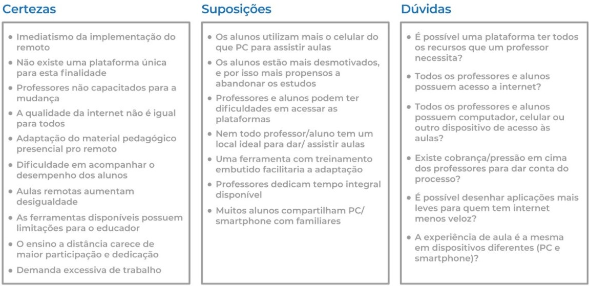
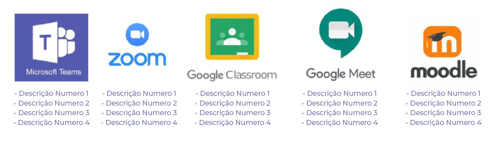
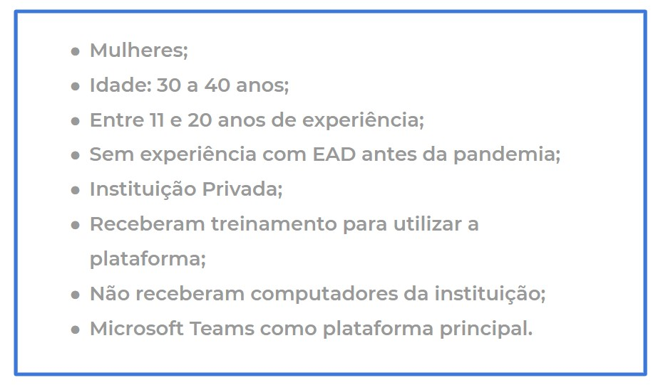
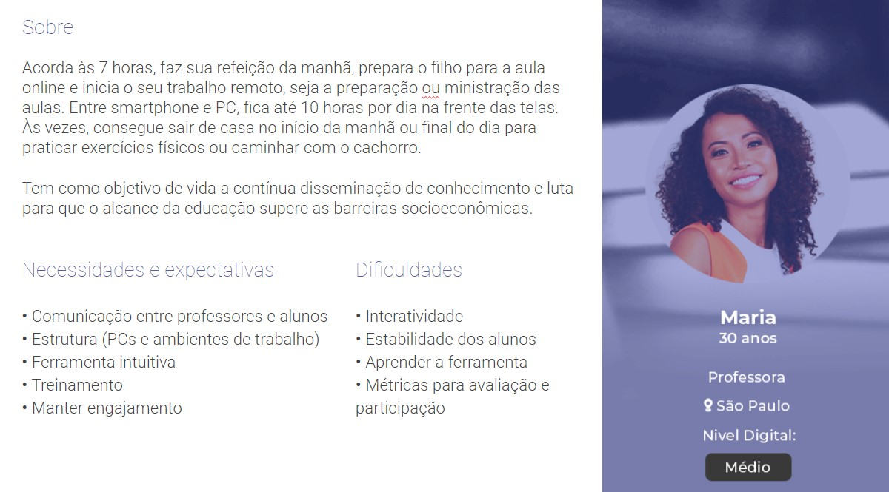
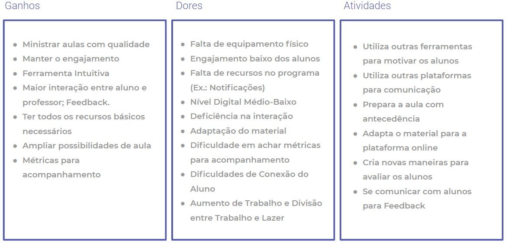
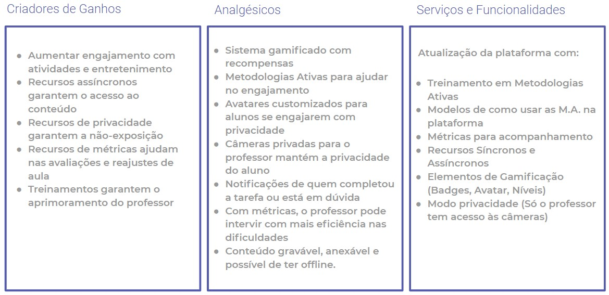

MS Teams | Update do Professor
Projeto não oficial de update do MS Teams para professores
O Ínicio
A Raiz do Problema
Devido à pandemia da COVID-19, o ensino remoto foi adotado emergencialmente.
Com isso, muitos alunos e professores foram impactados.
Resolvemos então focar no professor para levantar as maiores dificuldades enfrentadas nessa
adaptação do presencial para o remoto e chegamos ao desafio:
Como podemos ajudar o professor a amenizar a transição para o EAD de forma a conseguir dar uma aula de qualidade mesmo sabendo que a falta de uma plataforma de ensino digital única pode nos prejudicar?
Matriz CSD
Com o problema definido, criamos uma Matriz CSD (Certeza, Suposições e Dúvidas), para avaliarmos e separarmos o que já era de conhecimento da equipe do que queríamos descobrir através de pesquisas.
Benchmark
Nessa etapa levantamos os principais players do mercado, seu diferenciais e deficiências.
Pesquisa e Persona
A Metodologia
A partir da Matriz CSD e do Benchmark levantado, criamos dois formulários para a pesquisa:
Qualitativa
Um roteiro para entrevista de profundidade para descobrir melhor quais são as dores dos usuários.
Veja o PDFQuantitativa
Um Google Forms adaptado do roteiro para atingir um número maior de pessoas e buscarmos respostas em números.
Veja o PDFDados
Perfil dos Entrevistados
Persona
Baseado em todos os dados levantados pelas pesquisas e entrevistas, chegamos à persona que mais representa o público-alvo que estamos tentando abordar.
Os Problemas
Definindo as Dificuldades

Perfil do Cliente
Proposta de Valor
clique nas imagens para ampliar
Os Principais Problemas
Com base no gráfico de principais dificuldades levantado através das pesquisas e entrevistas,
desenvolvemos os canvas de Perfil do Cliente e Proposta de Valor para definir os maiores problemas
para os usuários e como o produto se proporcionaria a solucioná-los.
Decidimos então que os principais problemas a serem atacados seriam: